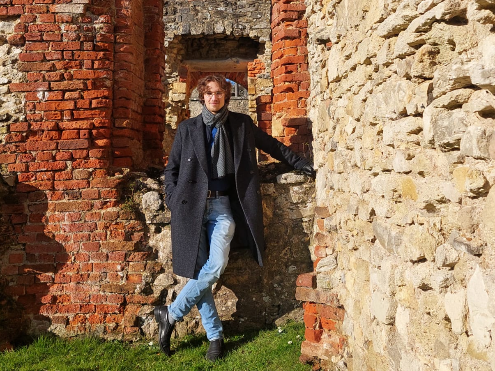

A note on Duality and the Atiyah–Hirzebruch spectral sequence
(arXiv), to appear in Glasgow Mathematical Journal
I am a PhD student of Daniel Kasprowski at the University of Southampton. Before that, I was based in Bonn, working with Peter Teichner. My research interests lie primarily at the intersection of geometric topology and homotopy theory. This includes spaces of embeddings and diffeomorphisms, 4-manifolds, surgery theory, K- and L-Theory, and cobordism categories.
